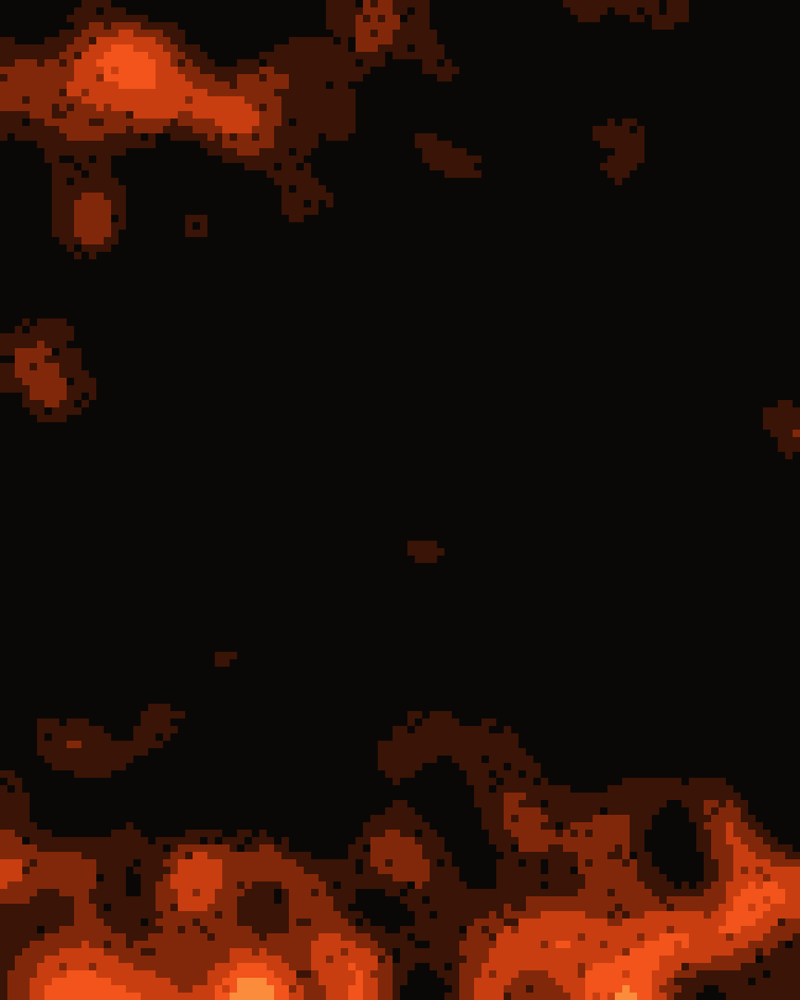

Selección de
10 skills
de Claude
para tu negocio · Parte 1
La skill oficial de Anthropic: páginas con dirección visual clara, que no se ven hechas con IA
| nombre | frontend-design |
|---|---|
| descripción | Guía para un diseño visual distintivo e intencional al crear una interfaz nueva o rediseñar una existente. Ayuda con la dirección estética, la tipografía y decisiones que no se vean de plantilla. |
| licencia | Términos completos en LICENSE.txt |
Aborda esto como el director de diseño de un estudio conocido por darle a cada cliente una identidad visual propia, que no se confunda con la de nadie más.
Si el brief no dice cuál es el producto o el tema, identifícalo tú antes de diseñar y confírmalo con el cliente.
En la web, lo primero que se ve es la portada: abre con lo más característico del mundo del tema.
La tipografía lleva la personalidad de la página: usa una familia o dos, y si son dos, que sean claramente distintas.
Pósters y piezas gráficas en PNG o PDF, a partir de una idea de diseño
| nombre | canvas-design |
|---|---|
| descripción | Crea arte visual en .png y .pdf usando una filosofía de diseño. Úsala cuando pidas un póster, una pieza de arte, un diseño u otra pieza estática. |
| licencia | Términos completos en LICENSE.txt |
Estas son instrucciones para crear filosofías de diseño: movimientos estéticos que luego se EXPRESAN VISUALMENTE. Solo entrega archivos .md, .pdf y .png.
Hazlo en dos pasos:
Para empezar, crea una FILOSOFÍA VISUAL (no diseños ni plantillas) que se interpretará a través de:
Crea y edita presentaciones y pitch decks en PowerPoint
| nombre | pptx |
|---|---|
| descripción | Úsala siempre que haya un archivo .pptx de por medio: crear presentaciones o pitch decks, leer su contenido, editarlas, combinarlas o trabajar con plantillas. |
| licencia | Propietaria. Términos completos en LICENSE.txt |
Un .pptx es un archivo ZIP de XML. Elige el método según la tarea:
| Tarea | Método |
|---|---|
| Crear una presentación | Escribe un script con pptxgenjs |
| Editar una existente o partir de plantilla | descomprimir → editar la diapositiva → comprimir |
| Leer el contenido | markitdown deck.pptx |
Las rutas son relativas a la carpeta de la skill.
Hojas de cálculo con fórmulas y gráficos, o limpia las que ya tienes
| nombre | xlsx |
|---|---|
| descripción | Úsala cuando una hoja de cálculo sea la entrada o la salida principal: abrir, leer, editar o arreglar un .xlsx o .csv, agregar columnas, calcular fórmulas, dar formato o crear gráficos. |
| licencia | Propietaria. Términos completos en LICENSE.txt |
| Tarea | Método |
|---|---|
| Crear o editar con fórmulas y formato | openpyxl |
| Datos en bloque de entrada o salida | pandas |
| Vistazo rápido a una hoja | markitdown file.xlsx |
| Leer un modelo (fórmulas y valores) | dos pasadas de load_workbook |
openpyxl,pandasymarkitdownya vienen instalados.
Propuestas, contratos y documentos en Word con formato profesional
| nombre | docx |
|---|---|
| descripción | Úsala cuando quieras crear, leer, editar o manejar documentos de Word (.docx): informes, cartas, plantillas, tablas de contenido, encabezados y numeración de páginas. |
| licencia | Propietaria. Términos completos en LICENSE.txt |
Un .docx es un archivo ZIP de XML. Elige el método según la tarea:
| Tarea | Método |
|---|---|
| Crear un documento | Escribe un script con docx (npm) |
| Editar uno existente | descomprimir → editar word/document.xml → comprimir |
| Leer el contenido | pandoc -t markdown file.docx |
Lee, une, separa y llena PDFs, y saca tablas y texto de ellos
| nombre | |
|---|---|
| descripción | Úsala para todo lo que tenga que ver con PDFs: leer o extraer texto y tablas, unir o separar archivos, rotar páginas, poner marcas de agua, llenar formularios o aplicar OCR a documentos escaneados. |
| licencia | Propietaria. Términos completos en LICENSE.txt |
Esta guía cubre las operaciones esenciales con PDFs usando librerías de Python y herramientas de línea de comandos. Si necesitas llenar un formulario PDF, lee FORMS.md.
from pypdf import PdfReader, PdfWriter
# Leer un PDF
reader = PdfReader("documento.pdf")
print(f"Páginas: {len(reader.pages)}")10 temas de colores y fuentes listos para tus slides, documentos y páginas
| nombre | theme-factory |
|---|---|
| descripción | Herramientas para darle estilo a cualquier pieza con un tema: presentaciones, documentos, informes o landing pages. Trae 10 temas predefinidos de colores y fuentes, o crea uno nuevo al momento. |
| licencia | Términos completos en LICENSE.txt |
Esta skill ofrece una colección curada de temas profesionales de fuentes y colores, cada uno con paletas y combinaciones tipográficas elegidas con cuidado. Una vez eliges un tema, se puede aplicar a cualquier pieza.
Para dar un estilo coherente y profesional a tus presentaciones. Cada tema incluye:
Aplica colores y tipografías de marca. Trae la de Anthropic: úsala de molde para la tuya
| nombre | brand-guidelines |
|---|---|
| descripción | Aplica los colores y la tipografía oficiales de la marca Anthropic a cualquier pieza. Úsala cuando necesites colores de marca, guías de estilo o estándares de diseño de una empresa. |
| licencia | Términos completos en LICENSE.txt |
Usa esta skill para acceder a la identidad de marca y los recursos de estilo oficiales de Anthropic.
Palabras clave: branding, identidad corporativa, identidad visual, colores de marca, tipografía, diseño visual
Colores principales:
#141413, texto principal y fondos oscuros#faf9f5, fondos claros y texto sobre oscuroCrea tus propias skills, pruébalas y mejóralas
| nombre | skill-creator |
|---|---|
| descripción | Crea skills nuevas, modifica y mejora las que ya tienes y mide su rendimiento con pruebas. |
| licencia | Términos completos en LICENSE.txt |
Una skill para crear skills nuevas e irlas mejorando.
A grandes rasgos, el proceso para crear una skill es así:
La mía: modela un carrusel viral con tu tema, tu voz y tu oferta. Exclusiva de mi taller
Solo para alumnos del
Taller de contenido que vende con IA
¿No sabes por dónde empezar?
Taller de contenido que vende con IA
Te enseño a usar Claude para crear el contenido de tu negocio: estrategia, guiones, carruseles y más.
Link en MI PERFIL
¿Quieres los links?
Comenta ↘
SKILLS
y te los envío
por mensaje directo
El diseño no es solo cómo se ve. El diseño es cómo funciona.
Steve Jobs